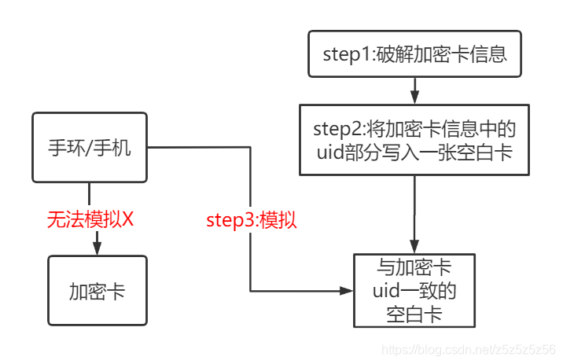

Warning!
This tutorial only teaches simulation-related knowledge and how to use wristbands to simulate fully encrypted campus cards. It is for personal learning only. Do not modify data or amounts. Any illegal consequences resulting from this are the individual's responsibility.
This tutorial only covers sector 0 UID simulation teaching, not amount or other information modification.
The idea of simulating encrypted cards has been around for a long time. However, the methods and steps on the internet are inconsistent. After reading a lot of information, I finally figured it out. Now I'm organizing and trying to write a tutorial.
Materials Needed

PN532 module and required materials
Hardware: PN532, USB to Serial, 4 Dupont wires, UID card (note this tutorial does not apply to CUID/UFUID cards!), The wristband you want to simulate (I used Honor Band 5) + phone with NFC
Software: QQ Tool (蛐蛐), MifareOneTool, Drivers
Simulation Principle

NFC Technology Principle
- Wristbands cannot directly simulate encrypted cards because encrypted cards contain other information besides sector 0 (where UID is stored)
- To make the wristband simulate, we need to create a blank UID card with only sector 0 (with the same UID as the original encrypted card)
- We use UID cards because they can use backdoor special commands to modify the UID (card number)
- To create this blank card, we first need to read sector 0 from the original encrypted card, which involves using the QQ tool for cracking (fully encrypted cards)
- Using the phone to control the wristband to simulate the blank card is to write the original encrypted card information (except for block 0's 63 blocks) into the wristband
Some terminology: S50 card = encrypted with SAK08 = common campus card = MIFARE Classic 1K
Tutorial
Step 0: Environment Setup
You need to connect USB to serial with PN532 using 4 Dupont wires:
- GND ---- GND
- VCC ---- +5V/VCC
- TXD ---- RXD
- RXD ---- TXD
If you haven't installed the driver before, you need to install the USB to serial driver (CH340 driver).
Step 1: Crack Encrypted Card Information (Fully Encrypted Card)
First, let's test if the environment is set up correctly and whether the card is fully encrypted.
Open MifareOneTool, click Detect Connection, and you should see the following information. Then place the campus card on PN532 and click Scan Card. This step helps us understand the card's information. If it's SAK08, it can most likely be copied.
Then click One-Click Decrypt Original Card. If it's a fully encrypted card, you will see the cracking interface.
Close MifareOneTool, open QQ Tool (蛐蛐), still place the original card on PN532, click in the upper right: Fully Encrypted Card Crack Key. Then it will start sniffing and cracking. Be patient, this process takes 30-60 minutes. When 3 or more identical keys appear on the right, it's likely correct.
Save the keys that appear on the right, then copy and paste them into the known keys. Then click Read with Key. Reading also takes about 30 minutes. After reading is complete, the original card information will be saved as key.dump in the same directory as QQ Tool. To prevent overwriting, I strongly recommend copying and saving it! We copied and named it original_card.dump.
Step 2: Create Blank Card
Close QQ Tool, open MifareOneTool again, click in order: Advanced Mode - Hex Editor - File - Open, and open the saved original_card.dump.
Switch between sectors to display information. Copy sector 0's block 0 information, then click File - New - First click sector 1 then click sector 0 (this step initializes a new file) - Then paste the information into sector 0's block 0 of the new file - Click Modify Sector - Then Save As blank_card.dump. Note: Save As! It's a dump file!
Next, place the blank UID card on PN532, select Write UID Card, open the blank_card.dump file, and write it to the UID card to achieve writing the card number.
Step 3: Simulate
Connect the wristband to the phone, select the Simulate Card function, and simulate the UID card we just wrote (note: simulate, not create blank card!)
PS: Usually, the add blank card function is only available in Android phone apps. It's been removed from iPhone, so remember to use an Android phone. I used the Huawei Sports Health app.
Wait for a while, and when the simulation is successful, you're done.
Step 4: Write Original Card Information, Activate Wristband
In Step 3, we simulated sector 0 block 0, which means we've already written the UID. Now we need to write the other 63 blocks of information (encrypted data) so the wristband fully simulates the original card.
Open QQ Tool, place the UID card on PN532, click Read with Default Key. This step is to make the key (original card's key) in the key.dump file in the same directory as QQ Tool recognized and loaded by the software, so we know the key before writing the encrypted card data to the wristband.
Then remove the UID card, place the wristband, browse for file and select original_card.dump, click write. When you see success, it means writing is successful!
If there's other information, it means writing failed. Remember to try several more times, or delete the card from the phone and repeat the above steps.
Now you can happily go swipe your wristband!
Other Ways to Simulate Campus Cards
1. STM32/Arduino + RC522
This method requires building a project on STM32 and using RC522 library functions to send commands to 522 to achieve modifying white card UID. This method has high freedom and is suitable for understanding principles and advanced DIY players.
2. Xiaomi Phone Direct Simulation
According to tests, Xiaomi phones with NFC under MIUI12 can directly simulate fully encrypted cards. If you want to put it on a wristband, follow the steps above.
References
- BiliBili Video Tutorial
- Electronic Rabbit Taobao Store Materials